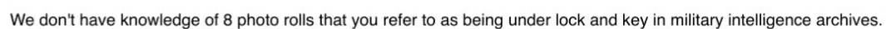

Dokaz · E-mail
Tužilaštvo Haškog tribunala Giltayu, 3. oktobra 2017.
Odlomak
„Nemamo saznanja o osam filmskih rolni za koje navodite da se nalaze pod ključem u arhivima vojne obavještajne službe.“ Stranica 1, prva rečenica četvrtog pasusa poruke. Prijevod s engleskog; izvorni tekst naveden je ispod.
Izvorni tekst
“We don’t have knowledge of 8 photo rolls that you refer to as being under lock and key in military intelligence archives.” E-mail je napisan na engleskom.

Zašto je ovaj dokument važan
Na osnovu rezolucije 827, usvojene prema poglavlju VII Povelje UN-a, svaka država, uključujući i Nizozemsku, bila je dužna u potpunosti sarađivati s Tribunalom i postupati po njegovim zahtjevima za pomoć i nalozima. Giltay je Tribunalu postavio pitanje o filmskim rolnama, a ovo je odgovor koji je dobio. Tužilaštvo izjavljuje da nema saznanja o osam rolni koje se navodno nalaze pod ključem u arhivima vojne obavještajne službe. Broj osam je Giltay preuzeo iz izvještaja ANP-a od 28. novembra 2016. na ThePostOnline: advokati Klaas Arjen Krikke i Michael Ruperti u njemu su, u ime više od dvije stotine veterana Dutchbata III, tvrdili da se u arhivu MIVD-a prikrivaju otisci najmanje osam filmskih rolni.
Porijeklo
- Dokument
- Odgovor e-mailom, jedna stranica
- Pošiljalac
- Ljiljana Piteša, Media Relations, Tužilaštvo (Office of the Prosecutor), Haški tribunal (ICTY)
- Primalac
- Edwin Giltay
- Datum
- 3. oktobra 2017., u 15:32 sati
- Predmet
- „Obligation to hand over evidence“ (‚Obaveza predaje dokaznog materijala‘)
- Odgovor na
- Giltay Tužilaštvu, 24. septembra 2017.
- Upućivanja
- Izvještaj ANP-a od 28. novembra 2016. na ThePostOnline o osam filmskih rolni u arhivu MIVD-a; dokazni predmeti P02191, P02192 i P02193 u predmetu Popović i drugi; P01500, P01501 i P01502 u predmetu Tolimir
- Jezik
- Engleski
- Vidi također
- Rezolucija 827 (1993) Vijeća sigurnosti UN-a, 25. maja 1993.
Citirano u: eseju „Zabrana pala, knjiga opstala“ u poglavlju (4) „Zataškavanje s međunarodnom dimenzijom“.
Stranica dokaza: https://
Dokument: https://
Posljednja izmjena 13. septembra 2026., pristupljeno 3. oktobra 2026.

Ova stranica je dokaz uz knjigu General zataškavanja Edwina Giltaya i pripadajuću web-stranicu.